Prise en main
Manuel d’utilisation de Contelia
1 Contelia
Contelia est conçu sous la forme de deux boîtes imbriquées. La boîte principale contient la boîte à histoires ainsi qu’une paire de haut-parleurs USB permettant directement l’écoute.
Pour ouvrir la boîte, cherchez un petit décrochement au centre du côté le plus long et qui vous permet, avec un ongle, de séparer le couvercle. Celui-ci est maintenu avec l’aide de clips.
Si vous vous demandez pourquoi est-ce important de savoir ouvrir la boîte, c’est tout simplement pour pouvoir la recharger. En effet, il n’est pas possible d’accéder au connecteur USB-C tant qu’elle est fermée. Voir la section Recharger la batterie.
La boîte à histoires est simplement posée à l’intérieur de la boîte principale. Le câble USB enroulé sert uniquement à relier les haut-parleurs à la boîte à histoires.
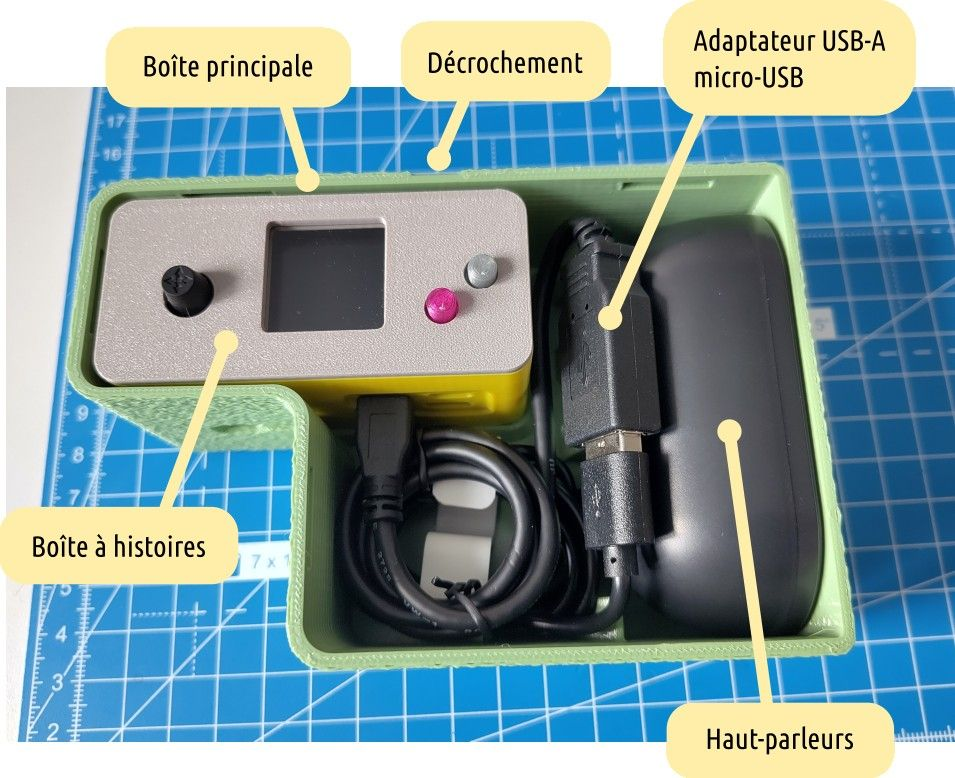
Observez bien les connecteurs de la boîte à histoires. Il est important de toujours brancher les haut-parleurs sur le connecteur micro-USB de gauche. Le connecteur mini-HDMI n’est pas utile aujourd’hui (à par pour les bidouilleurs). Mais il sera utilisé dans une version ultérieure du logiciel et qui permettra d’exploiter Contelia autrement. A propos du connecteur micro-USB de droite (avec la croix rouge dans l’image ci-dessous), vous pouvez le considérer comme étant inutilisé.
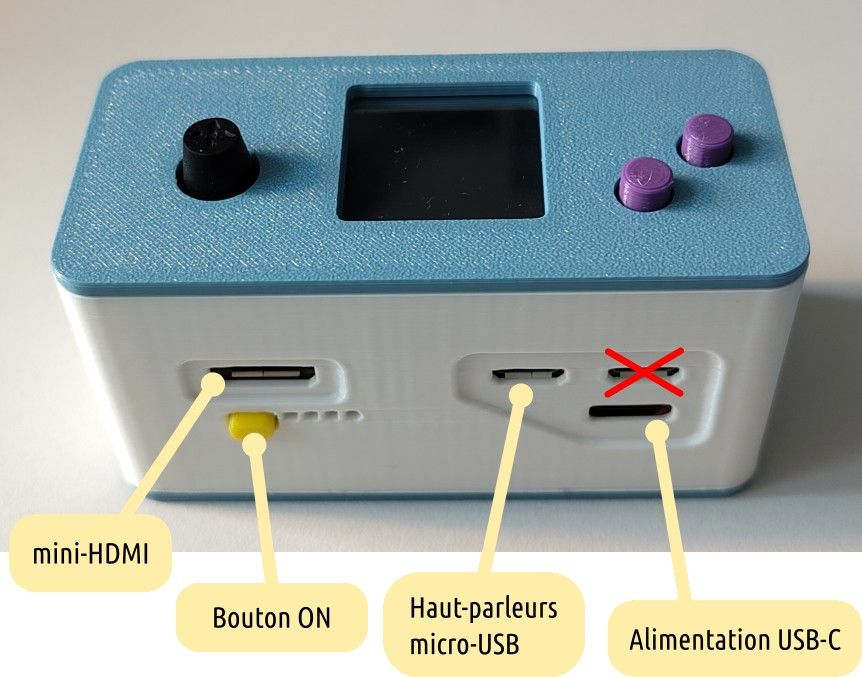
Ne branchez pas les haut-parleurs sur le connecteur micro-USB de droite car ça ne fonctionnera pas.
1.1 Recharger la batterie
Pour recharger Contelia, vous devez utiliser un câble USB-C (ce câble ainsi que le chargeur ne sont pas livrés avec Contelia). C’est le câble que l’on utilise habituellement avec un téléphone mobile. Le connecteur est clairement indiqué sur l’image précédente, c’est l’alimentation USB-C. Vous pouvez ainsi utiliser le même chargeur que pour votre téléphone.
Pendant la charge, Contelia peut être utilisé tout à fait normalement. Contelia est configuré pour protéger la batterie. Ce qui veut dire qu’elle ne sera jamais chargée à plus de 80% de sa capacité. Bien que cela entraîne une baisse d’autonomie, cette protection permet de prolonger sa durée de vie.
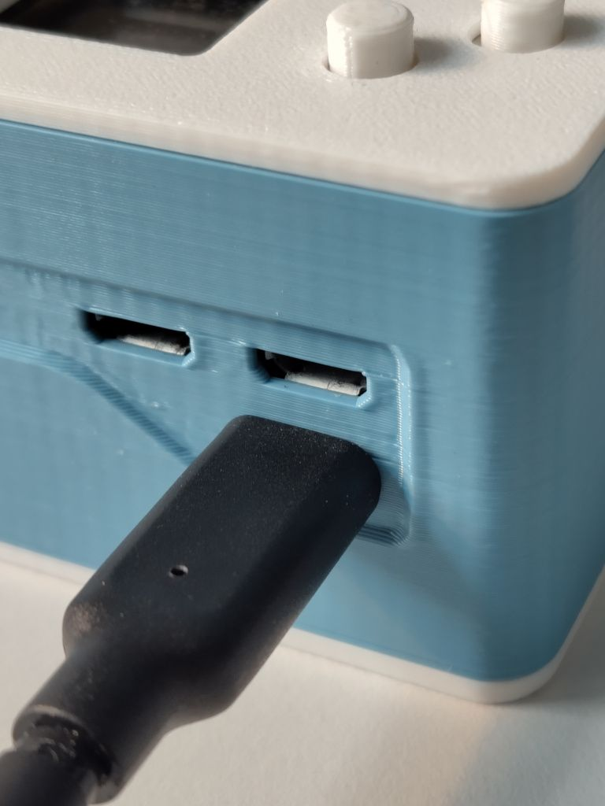
Bien que Contelia peut être utilisé pendant la charge, Si la batterie est complètement déchargée, il est nécessaire d’attendre au moins une minute ou deux avant de pouvoir allumer la boîte à histoires.
Notez bien qu’il est possible de changer une batterie usagée en cas de diminution trop impactante de l’autonomie. L’opération nécessite quand même l’utilisation d’un fer à souder.
Tant que Contelia est connecté à une alimentation externe par l’USB-C, des lumières vertes vont clignoter de gauche à droite. Cet indicateur ne permet pas vraiment de savoir quand la charge est complète même si le clignotement se fait avec les 4 lumières. Un meilleur indicateur est de simplement mettre la main sur le chargeur USB-C. Si après un certain temps, celui-ci n’est plus chaud, c’est qu’il ne charge plus rien et que vous pouvez alors le déconnecter.
2 Premier démarrage
Le premier démarrage (si aucun livre n’est chargé) va simplement vous montrer l’écran suivant qui signifie que Contelia est en attente de livres.
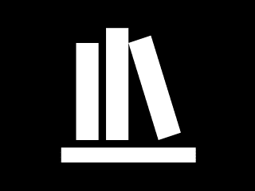
Dans le cas contraire, le premier livre va s’afficher et (s’il y en a plus d’un) vous pouvez naviguer très simplement dans les livres (voir la section « Navigation dans les menus » pour plus de détails).
3 Chargement des histoires
Contelia ne sert à rien sans contenu. Mais le contenu n’est bien souvent pas disponible gratuitement. En cherchant bien, il existe quelques projets communautaires et de plus, si vous avez déjà une boîte à histoires Lunii, il est possible de les charger sur Contelia (attention, cela ne concerne pas la Flam).
3.1 Lunii
Si vous n’avez pas de boîte à histoires Lunii, vous pouvez sauter ce chapitre et directement passer au chapitre « Communautaire ».
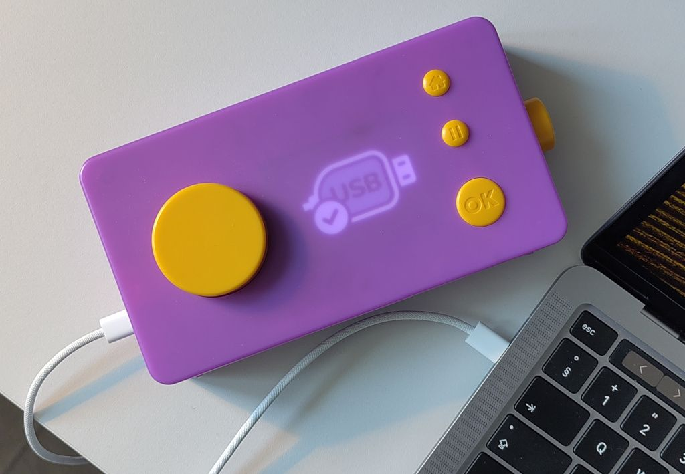
Récupérer les histoires que vous avez acheté avec la Lunii fait sens. Pour cela il faut brancher la Lunii à votre ordinateur, un nouveau périphérique devrait s’afficher en tant que disque USB.
| macOS | Windows |
|---|---|
| Vous devez autoriser ce périphérique. | |
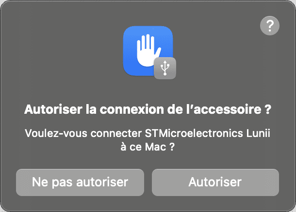 |
|
| Alors une nouvelle icône de disque devrait apparaître sur le bureau de votre Mac. | Un nouveau lecteur de disque devrait se monter dans l’explorateur de fichiers. |
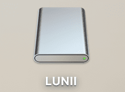 |
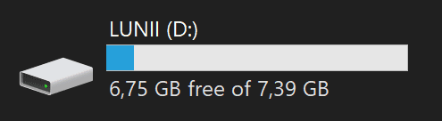 |
L’ouverture de ce disque va vous montrer différents fichiers. Il va falloir (sous macOS et Linux) afficher les fichiers cachés afin de mettre la main sur les histoires de votre Lunii.
| macOS | Windows |
|---|---|
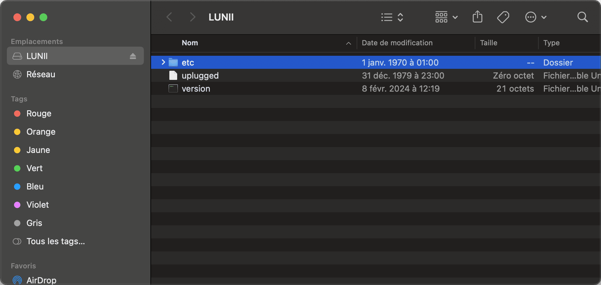 |
|
| Faîtes Shift-Command-.Shift-Command-. pour révéler les fichiers cachés. | Sous Windows, il n’est pas nécessaire de forcer l’affichage des fichiers cachés. |
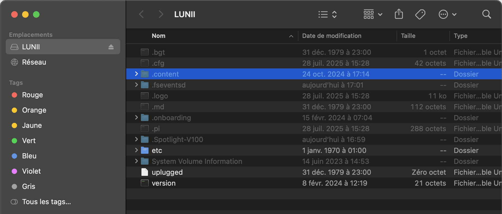 |
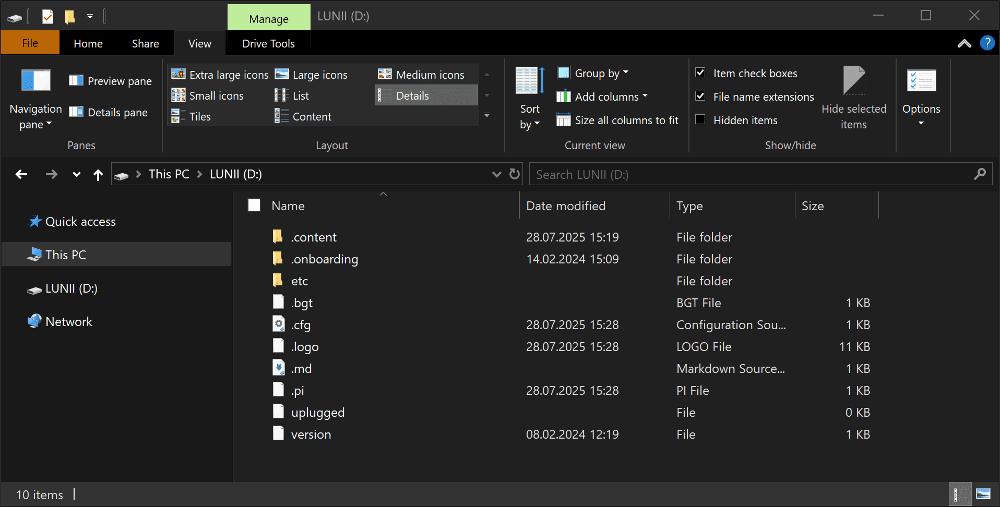 |
{kind=link}
{kind=link}
{kind=link}
Cherchez le dossier nommé .content car c’est lui qui contient toutes vos histoires. Dedans vous trouverez une liste de dossiers avec des noms cryptiques.
| macOS | Windows |
|---|---|
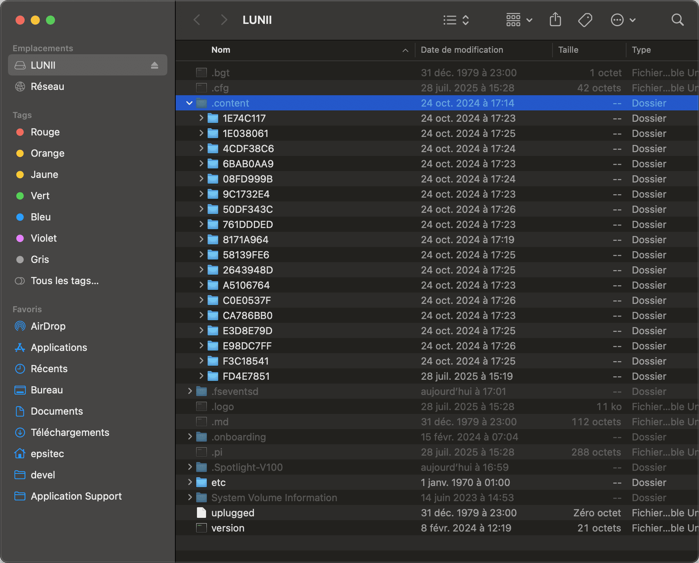 |
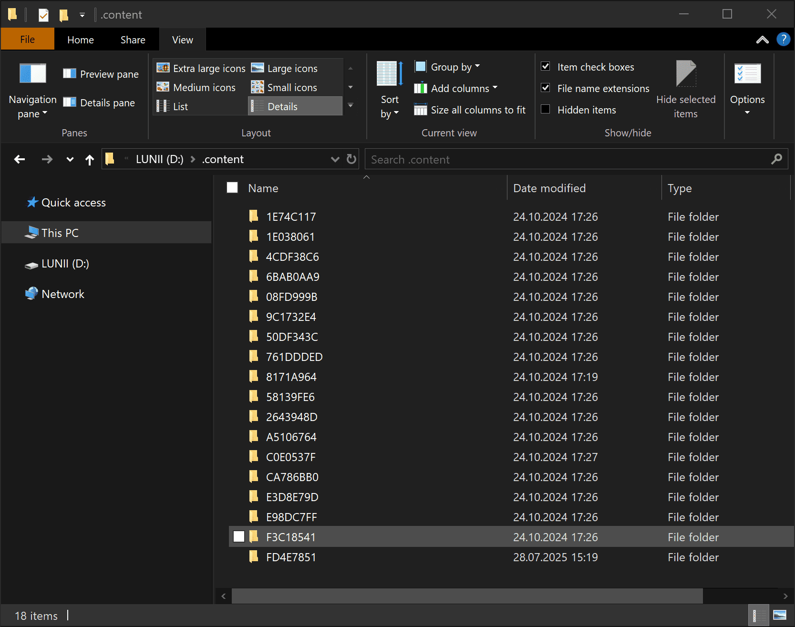 |
{kind=link}
{kind=link}
Copiez le dossier .content sur le disque de votre ordinateur (par exemple sur le bureau). Une fois la copie terminée, je vous invite à éjecter la Lunii car nous avons désormais tout ce qu’il nous faut.
| macOS | Windows |
|---|---|
| Depuis le Finder | Depuis la barre de statut |
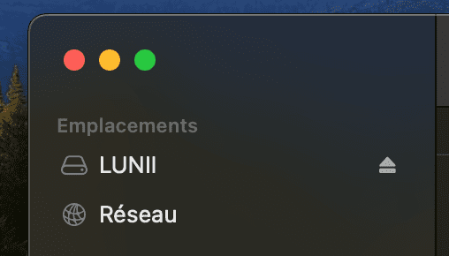 |
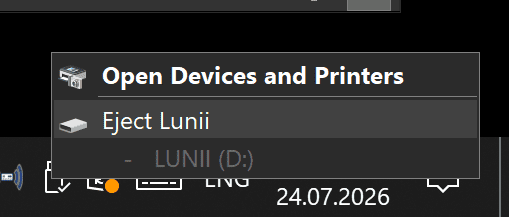 |
{kind=link}
{kind=link}
Ouvrez le dossier.content que vous avez transféré sur votre bureau. Dedans il y a un dossier par histoire. Pour chaque dossier, créez un fichier ZIP. Ce sont ces fichiers ZIP qui pourront être chargés dans la boîte à histoires Contelia.
| macOS | Windows |
|---|---|
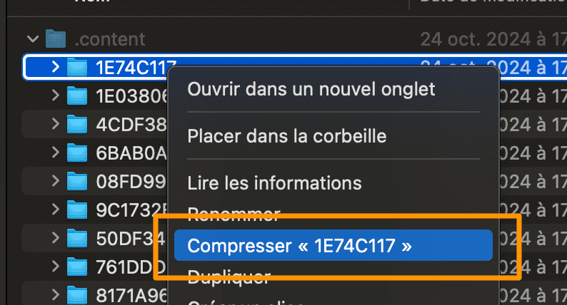 |
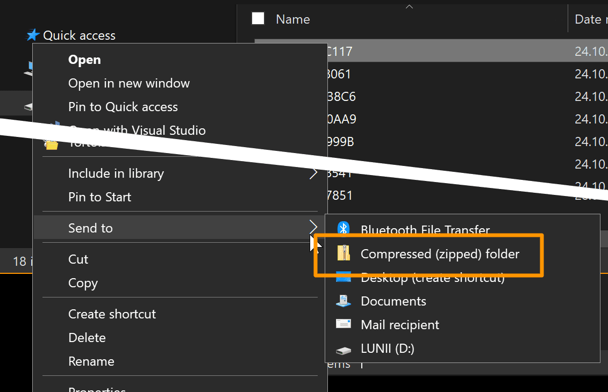 |
{kind=link}
{kind=link}
Ne vous inquiétez pas des noms car une fois chargé dans Contelia, les images de chaque histoire permettront de les identifier clairement.
3.2 Communautaire
Il existe des packs d’histoires disponibles gratuitement dans une communauté francophone que vous pouvez rejoindre par l’intermédiaire du logiciel Discord. Cette communauté met à disposition de nombreux livres, donne des conseils, de l’aide et sert également de vitrine pour de nombreux autres projets qui partage le même esprit que Contelia, c’est à dire d’offrir des alternatives aux boîtes à histoires Lunii, etc. Que ce soit du matériel dédié ou du “recyclage” de smartphones en liseuses pour enfants.
Vous y trouverez également toute l’aide nécessaire pour pouvoir créer vos propres histoires si le cœur vous en dit.
{kind=link}
L’utilisation du logiciel Discord est discutable, mais c’est le seul moyen de pouvoir accéder à cette communauté. Les livres téléchargeables chez eux peuvent être directement exploités dans Contelia. Je vous encourage fortement d’y aller faire un tour car leur bibliothèque est plutôt impressionnante.
3.3 Charger des histoires
Pour charger des histoires, vous devez mettre Contelia en mode configuration. Avant tout, il est recommandé de brancher le connecteur d’alimentation (charge) pour garantir que les transferts ne soient pas interrompus.
Pour activer le mode configuration vous devez effectuer la combinaison de boutons suivante :
- Tenez le joystick vers le bas (ne lâchez pas)
- Pressez simultanément les deux boutons
- Relâchez tout
Pour quitter ce mode, procédez exactement de la même manière.
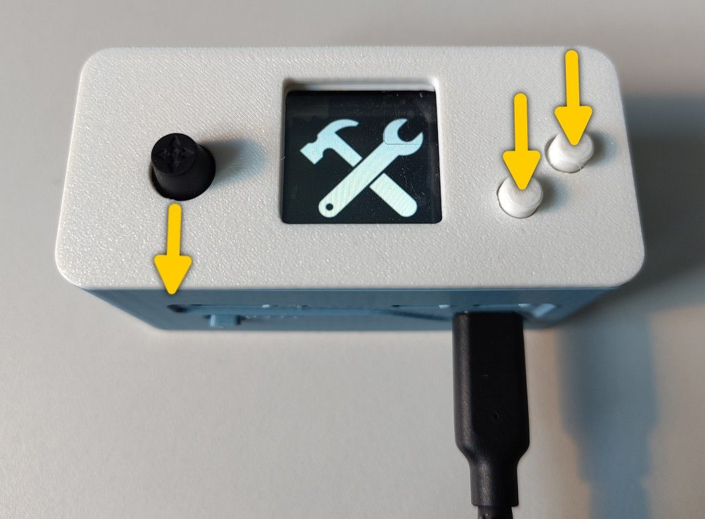
Si vous voyez bien le même écran que sur la photo ci-dessus, alors le mode configuration est activé et vous pouvez procéder aux modifications des histoires qui sont actuellement sauvegardées dans votre boîte à histoires.
A partir de maintenant, Contelia est en mode portail captif (captive portal). Cela veut dire qu’un nouveau réseau Wifi est apparu et se nomme Contelia. Vous pouvez alors utiliser un ordinateur ou un smartphone pour vous connecter à ce nouveau réseau. En vous connectant, votre ordinateur devrait vous proposer d’accéder à la page de connexion du réseau Contelia. Cette page permet de modifier le contenu de votre boîte à histoires.
Si votre ordinateur ne vous propose rien, ouvrez votre navigateur internet. Si le navigateur internet ne propose pas d’accéder au portail captif, alors entrez l’adresse de n’importe quel site internet et vous serez automatiquement redirigé sur la page de configuration de Contelia.
Bien entendu, quand vous êtes connecté au Wifi Contelia, vous ne pouvez plus utiliser votre réseau Wifi habituel et donc vous ne pouvez plus utiliser internet. Cela implique que vous avez déjà préparé dans votre ordinateur (ou votre smartphone), les histoires que vous souhaitez charger dans Contelia.
3.3.1 Portail
Le portail (ou gestionnaire) Contelia se présente sous la forme d’un formulaire permettant de charger une histoire au format ZIP, puis de modifier le contenu actuellement disponible dans la boîte à histoires. L’utilisation de cette page devrait être auto-explicative. Certaines actions nécessites de cliquer sur le bouton “Appliquer les modifications” pour que ce soit pris en compte.
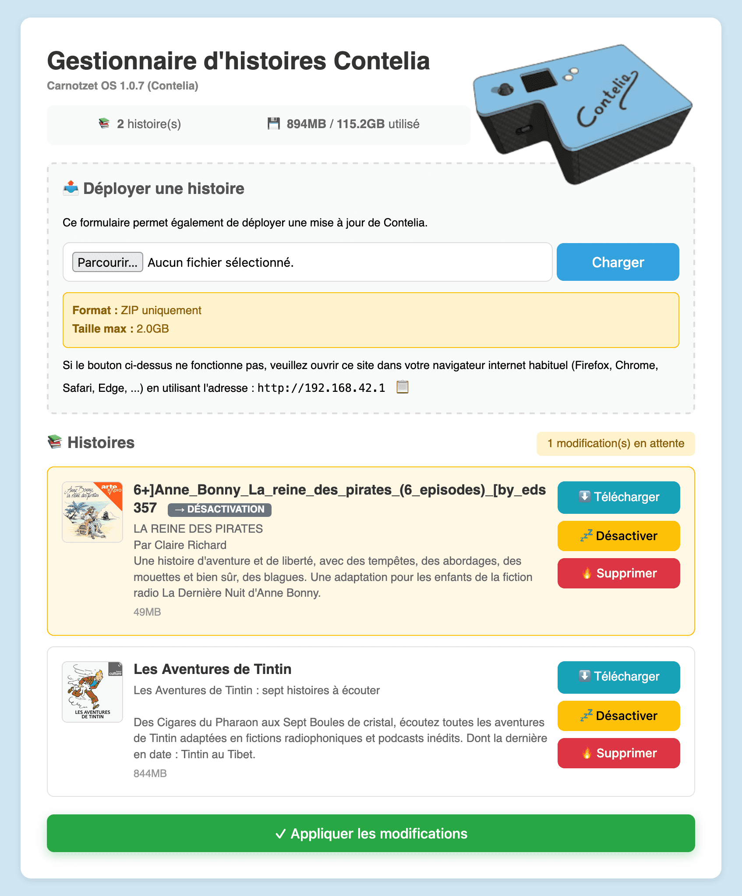
Dans la copie d’écran ci-dessus on peut voir que Contelia contient deux histoires et que l’utilisateur a choisi de désactiver l’une d’elle.
Fonctionnalités
- Charger une nouvelle histoire avec le formulaire en tête de page
- Télécharger une histoire depuis la boîte à histoires
- Désactiver une histoire pour la garder dans la boîte à histoire mais sans la rendre visible
- Supprimer une histoire
Il n’est (pour le moment) pas possible de modifier l’ordre des histoires.
5 Éteindre Contelia
Contelia s’éteint automatiquement après 20 secondes d’inactivité. Ce qui signifie que si aucune histoire est en cours de lecture et qu’aucune action n’est effectuée dans le menu, alors Contelia s’arrête.
Il y a deux exceptions. Quand Contelia est en mode configuration pour la modification des histoires ou en configuration du Bluetooth, celle-ci reste active indéfiniment.
Il est possible de forcer l’extinction de Contelia en tenant pressé le bouton d’alimentation pendant plus de 2 secondes.
6 Audio
Contelia peut être utilisée en dehors de sa boîte principale et sans les haut-parleurs USB. Ce chapitre vous présente deux possibilités. Mais sachez que vous ne pouvez pas connecter directement un câbles analogique de type jack. Si c’est nécessaire pour vous, il vous faudra acheter un adaptateur jack → USB.
6.1 Casque audio USB
Vous pouvez brancher un casque USB (à la place des haut-parleurs d’origine) directement dans l’adaptateur USB fourni.
[IMAGE]
Si vous avez un casque USB avec dongle (pour le sans-fil), vous pouvez brancher le dongle de la même manière.
[permet aussi d’augmenter l’autonomie]
6.2 Bluetooth
Contelia possède tout le nécessaire pour transmettre la lecture des histoires par Bluetooth. Elle devrait fonctionner directement avec les casques sans-fils, les haut-parleurs sans-fils ainsi que les voitures.
Pour activer le mode Bluetooth vous devez effectuer la combinaison de boutons suivante :
- Tenez le joystick vers le haut (ne lâchez pas)
- Pressez simultanément les deux boutons
- Relâchez tout
Pour quitter ce mode, procédez exactement de la même manière.
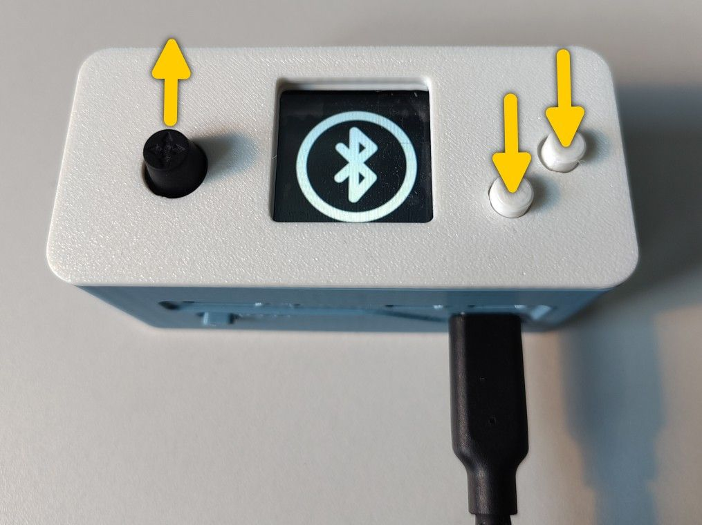
[permet aussi d’augmenter l’autonomie]